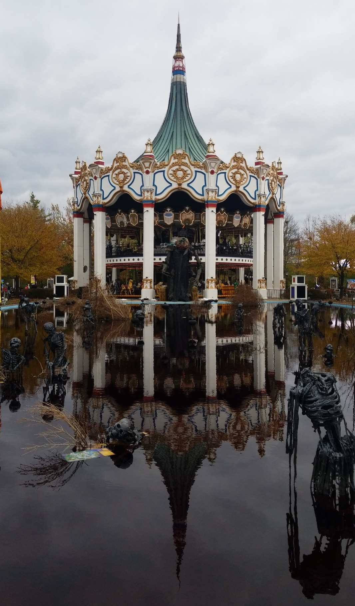
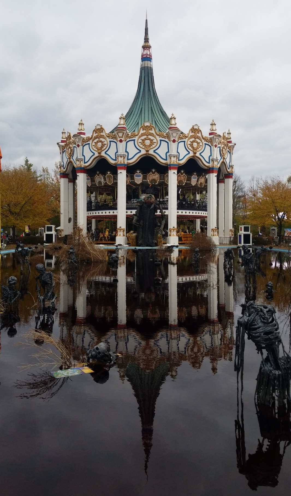

PHOTOS
I love taking photos of things! There's no getting around it - I love being able to capture the moment whether it be through a professional camera or simply through my phone. Check out a brief collection of some photos I've taken over the years. Most of these are mainly in Chicago from my undergrad years. These are some photos I've taken mainly in the city of various things.

 


I also love taking photos of my cats! They're the cutest and have helped me so much through quarantine. I have two cats that my family adopted from the shelter about four years ago.

I also really enjoy taking photos of delicious food I've tried. These are mainly spur of the moment photos that I end up taking right before putting my phone down to enjoy a delicious meal. I'm always down to try new restaurants adn new types of food but some of my favorites include ramen, sushi, and desserts.
Taking photos is a hobby I really want to build up more! I plan on buying a professional camera soon since I've previously enjoyed shooting with the Canon t5 before a lot. I'd love to connect more about photography with people and share more of my photos